Loading mathematics…
Chapter 5
Multiple Integrals
Riemann sums & symmetry
1–4- 01Chapter 5
Let \(S_{M,N}\) be the double Riemann sum for \(\displaystyle \iint\limits_{D} f(x,y) \, dA\) with \(M\) subdivisions of the \(x\)-interval and \(N\) subdivisions of the \(y\)-interval. Calculate the Riemann sum \(S_{2,3}\) for \(\displaystyle \int_{1}^{4} \int_{2}^{6} x^2y \, dx \, dy\) using two choices of sample points:
Lower-left vertex
Midpoint of rectangle
Then calculate the exact value of the double integral.
Solution to exercise 1
Divide \([2,6]\times[1,4]\) into two columns and three rows. Then \(\Delta A=2\).
(a) Lower-left sample points have \(x=2,4\), \(y=1,2,3\):
\[ S_{2,3}=2(2^2+4^2)(1+2+3)=240. \]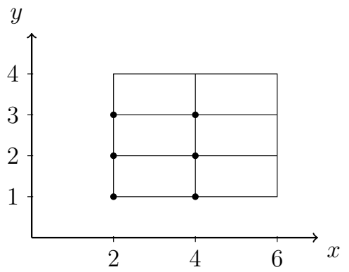
(b) Midpoints have \(x=3,5\), \(y=3/2,5/2,7/2\):
\[ S_{2,3}=2(3^2+5^2)\left(\frac32+\frac52+\frac72\right)=510. \]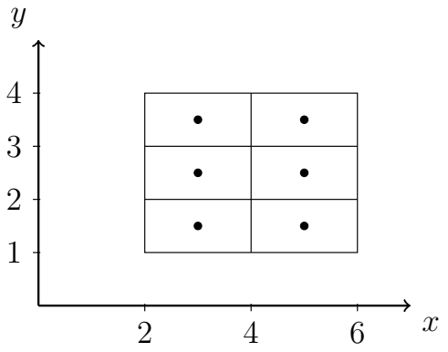
The exact integral is
\[ \left(\int_2^6x^2\,dx\right)\left(\int_1^4y\,dy\right)=\frac{208}{3}\cdot\frac{15}{2}=520. \] - 04Chapter 5
Explain the following:
\(\displaystyle \int_{-1}^{1} \int_{-1}^{1} \sin(xy) \, dx \, dy = 0\)
\(\displaystyle \int_{-1}^{1} \int_{-1}^{1} \cos(xy) \, dx \, dy > 0\)
Solution to exercise 4
(a) The double integral is the signed volume of the region between the graph of \( f(x, y) \) and the \( xy \)-plane.
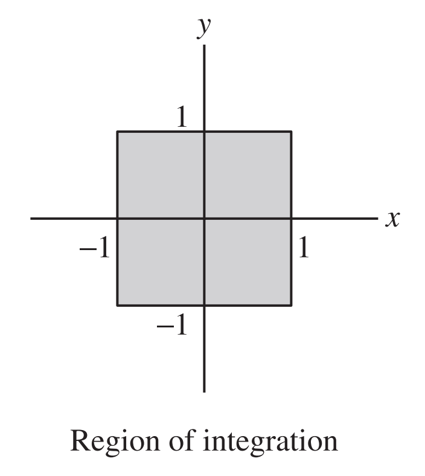
The function \( f(x, y) = \sin(xy) \) satisfies \( f(-x, y) = \sin(-xy) = -\sin(xy) = -f(x, y) \), hence the region left of the y-axis cancels with the region to the right of the y-axis. Therefore the double integral is zero.
(b) The function \( f(x, y) = \cos(xy) \) satisfies \( f(-x, y) = f(x, -y) = f(-x, -y) = f(x, y) \), hence
\[\int_{-1}^{1} \int_{-1}^{1} \cos(xy) \,dx \,dy = 4 \int_{0}^{1} \int_{0}^{1} \cos(xy) \,dx \,dy.\]Since \( 0 \leq xy \leq 1 \) for the square \([0, 1] \times [0, 1]\), we have \(\cos(xy) > 0\), and the double integral is positive.
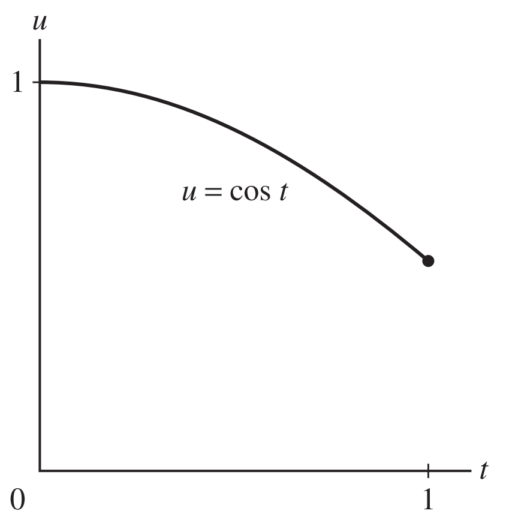
Iterated integrals
5–8In Exercises 5–8, evaluate the iterated integral.
- 05Chapter 5
\(\displaystyle \int_{0}^{2} \int_{0}^{5} y(x - y) \, dx \, dy\)
Solution to exercise 5
\[ \int_0^2\int_0^5 y(x-y)\,dx\,dy=\int_0^2\left(\frac{25}{2}y-5y^2\right)dy=25-\frac{40}{3}=\frac{35}{3}. \] - 06Chapter 5
\(\displaystyle \int_{1/2}^{0} \int_{0}^{\pi/6} e^{2y} \sin(3x) \, dx \, dy\)
Solution to exercise 6
We use an iterated integral of a product function to compute the double integral as the product of two single integrals. That is,
\[\int_{1/2}^{0} \int_{0}^{\pi/6} e^{2y} \sin 3x \,dx \,dy = \left( \int_{1/2}^{0} e^{2y} \,dy \right) \left( \int_{0}^{\pi/6} \sin 3x \,dx \right)\]\[= \left( \frac{1}{2} \left[ e^{2y} \right]_{1/2}^{0} \right) \left( -\frac{1}{3} \left[ \cos 3x \right]_{0}^{\pi/6} \right)\]\[= \frac{1}{2} (1 - e) \cdot \left( -\frac{1}{3} \right) ( \cos \frac{\pi}{2} - \cos 0 ) = \frac{1}{6} (1 - e)\] - 07Chapter 5
\(\displaystyle \int_{0}^{\pi/3} \int_{0}^{\pi/6} \sin(x + y) \, dx \, dy\)
Solution to exercise 7
We compute the inner integral treating \(y\) as a constant:
\[\int_{0}^{\frac{\pi}{6}} \sin(x + y) \,dx = -\cos(x + y) \Bigg|_{0}^{\frac{\pi}{6}} = -\cos \left( \frac{\pi}{6} + y \right) + \cos y = \cos y - \cos \left( \frac{\pi}{6} + y \right)\]We now integrate the result with respect to \(y\):\[\int_{0}^{\frac{\pi}{3}} \int_{0}^{\frac{\pi}{6}} \sin(x + y) \,dx \,dy = \int_{0}^{\frac{\pi}{3}} \left( \cos y - \cos \left( y + \frac{\pi}{6} \right) \right) \,dy = \sin y - \sin \left( y + \frac{\pi}{6} \right) \Bigg|_{0}^{\frac{\pi}{3}}\]\[= \sin \frac{\pi}{3} - \sin \left( \frac{\pi}{3} + \frac{\pi}{6} \right) - \left( \sin 0 - \sin \frac{\pi}{6} \right) = \frac{\sqrt{3}}{2} - 1 + \frac{1}{2} = \frac{\sqrt{3} - 1}{2}\] - 08Chapter 5
\(\displaystyle \int_{1}^{2} \int_{1}^{2} \frac{y}{x + y^2} \, dx \, dy\)
Solution to exercise 8
\[ I=\frac12\int_3^6\ln u\,du-\frac12\int_2^5\ln v\,dv. \]\[ I=\frac12[u\ln u-u]_3^6-\frac12[v\ln v-v]_2^5=3\ln6-\frac32\ln3-\frac52\ln5+\ln2\approx0.396912. \]
Integrating over a region
9–14In Exercises 9–14, sketch the domain \(D\) and calculate \(\iint_D f(x,y)\,dA\).
- 09Chapter 5
\(D = \{(x, y) \mid 0 \leq x \leq 4, 0 \leq y \leq x\}\), \(f(x, y) = \cos y\)
Solution to exercise 9
The domain \(D\) is shown in the figure:
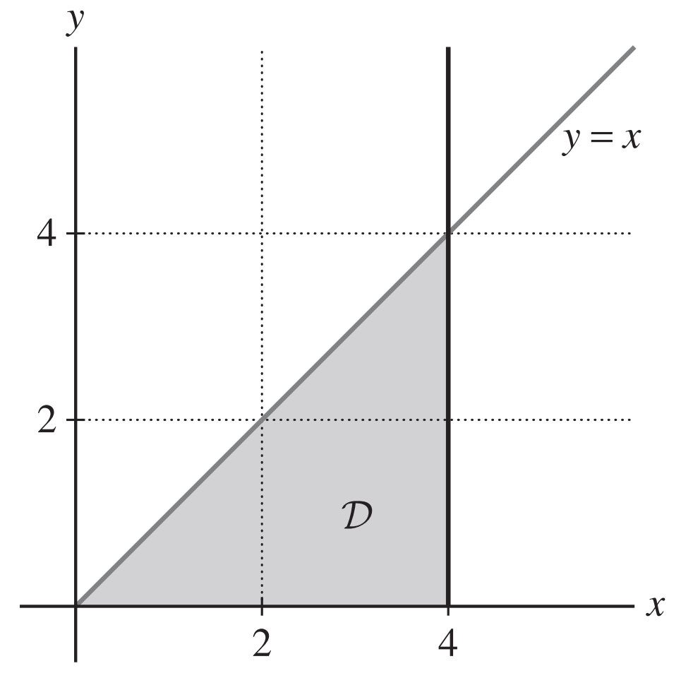
We compute the double integral, considering \(D\) as a vertically simple region. We describe \(D\) by the inequalities
\[0 \leq x \leq 4, \quad 0 \leq y \leq x.\]We now write the double integral as an iterated integral and compute:\[\iint_D \cos y \,dA = \int_{0}^{4} \int_{0}^{x} \cos y \,dy \,dx = \int_{0}^{4} \left. \sin y \right|_{y=0}^{x} \,dx\]\[= \int_{0}^{4} (\sin x - \sin 0)\,dx = \int_{0}^{4} \sin x \,dx = -\cos x \Bigg|_{0}^{4} = 1 - \cos 4\] - 10Chapter 5
\(D = \{(x, y) \mid 0 \leq x \leq 2, 0 \leq y \leq 2x - x^2\}\), \(f(x, y) = \sqrt{x}y\)
Solution to exercise 10
\[ I=\int_0^2\int_0^{2x-x^2}\sqrt{x}\,y\,dy\,dx=\frac12\int_0^2\sqrt{x}(2x-x^2)^2dx. \]\[ I=\left[\frac47x^{7/2}-\frac49x^{9/2}+\frac1{11}x^{11/2}\right]_0^2=\frac{256\sqrt2}{693}. \]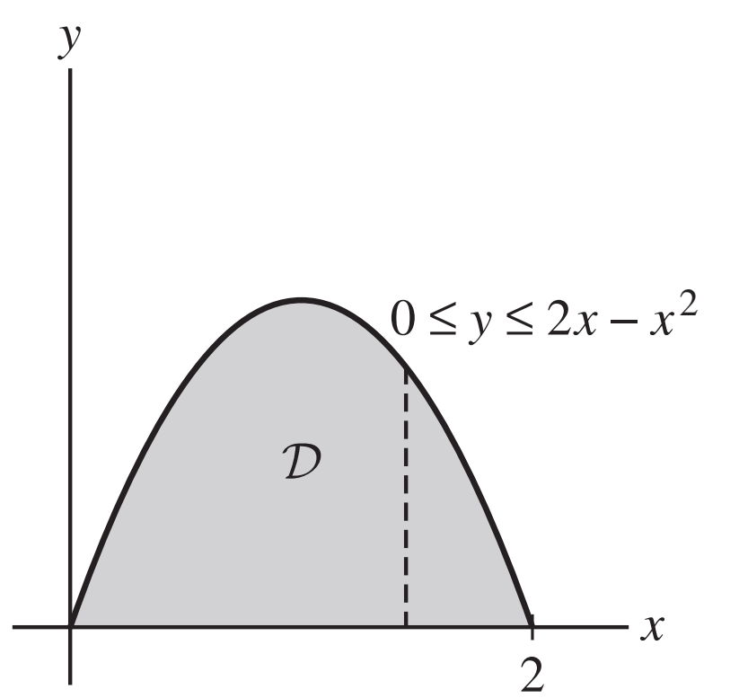
- 11Chapter 5
\(D = \{(x, y) \mid 0 \leq x \leq 1, 1 - x \leq y \leq 2 - x\}\), \(f(x, y) = e^{x+2y}\)
Solution to exercise 11
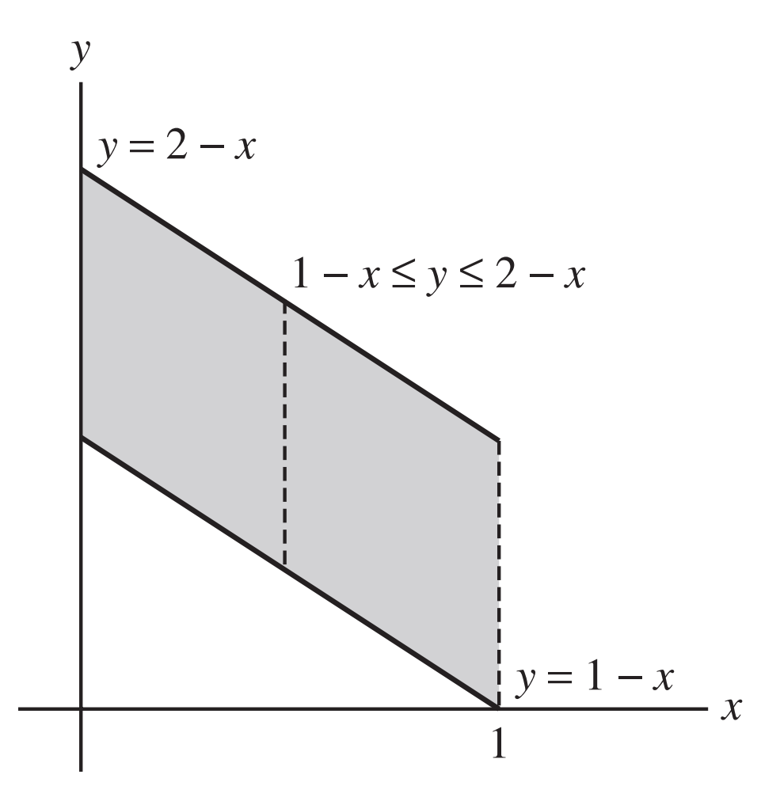
\(D \) is a vertically simple region, hence the double integral over \(D\) is the following iterated integral:
\[\iint_D e^{x+2y} \,dA = \int_{0}^{1} \int_{1-x}^{2-x} e^{x+2y} \,dy \,dx = \int_{0}^{1} \left. \frac{1}{2} e^{x+2y} \right|_{y=1-x}^{2-x} \,dx\]\[= \int_{0}^{1} \left( \frac{1}{2} e^{x+2(2-x)} - \frac{1}{2} e^{x+2(1-x)} \right) \,dx = \int_{0}^{1} \left( \frac{1}{2} e^{4-x} - \frac{1}{2} e^{2-x} \right) \,dx\]\[= \left[ -\frac{1}{2} e^{4-x} + \frac{1}{2} e^{2-x} \right]_{0}^{1} = \frac{1}{2} e \left( e^{3} - e^{2} - e + 1 \right) = \frac{1}{2}e\left( e + 1 \right)\left( e - 1 \right)^{2}\] - 12Chapter 5
\(D = \{(x, y) \mid 1 \leq x \leq 2, 0 \leq y \leq 1/x\}\), \(f(x, y) = \cos(xy)\)
Solution to exercise 12
\[ I=\int_1^2\left[\frac{\sin(xy)}x\right]_{y=0}^{1/x}dx=\int_1^2\frac{\sin1}{x}dx=\sin1\ln2. \]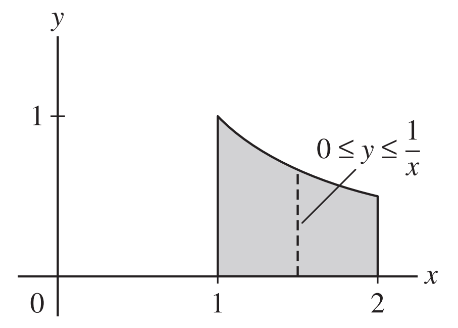
- 13Chapter 5
\(D = \{(x, y) \mid 0 \leq y \leq 1, 0.5y^2 \leq x \leq y^2\}\), \(f(x, y) = ye^{1+x}\)
Solution to exercise 13
\[ I=\int_0^1 y\left(e^{1+y^2}-e^{1+y^2/2}\right)dy. \]\[ I=\frac12[e^{1+y^2}]_0^1-[e^{1+y^2/2}]_0^1=\frac12e^2-e^{3/2}+\frac12e. \]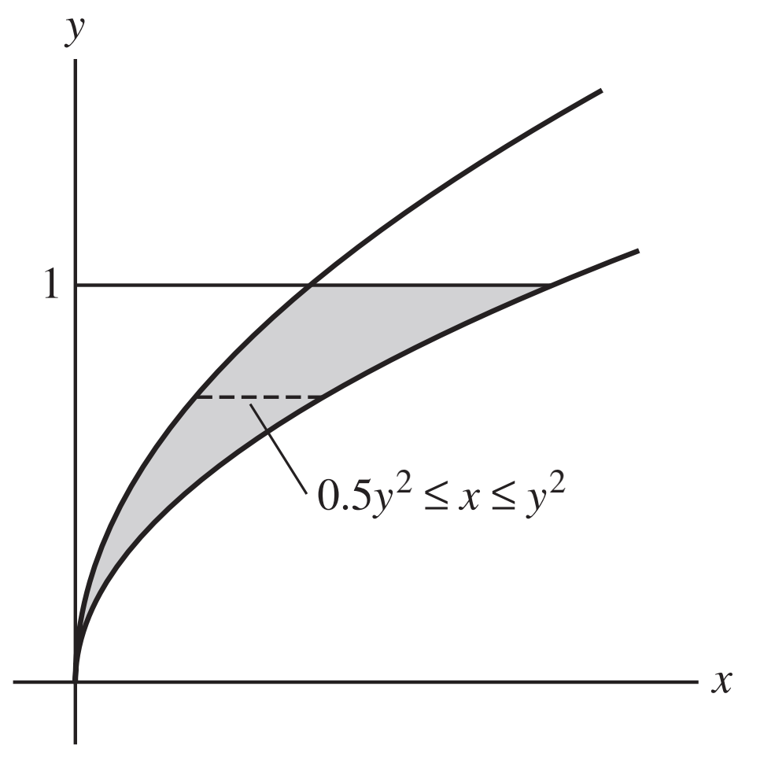
- 14Chapter 5
\(D = \{(x, y) \mid 1 \leq y \leq e, y \leq x \leq 2y\}\), \(f(x, y) = \ln(x + y)\)
Solution to exercise 14
\[ I=\int_1^e\left[(x+y)(\ln(x+y)-1)\right]_{x=y}^{2y}dy. \]\[ I=\int_1^e y\left(\ln y+3\ln3-2\ln2-1\right)dy. \]Let \(C=3\ln3-2\ln2-1\). Then
\[ I=\left[\frac{y^2}{2}\left(\ln y-\frac12+C\right)\right]_1^e=\frac{e^2+1}{4}+\frac{C(e^2-1)}2. \]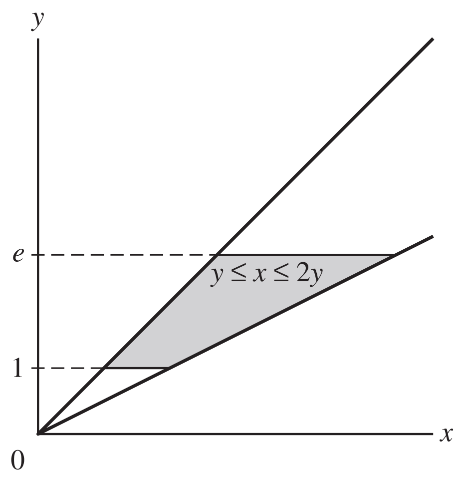
Integration order & regions
15–22- 15Chapter 5
Express \(\displaystyle \int_{-3}^{3} \int_{0}^{9-x^2} f(x, y) \, dy \, dx\) as an iterated integral in the order \(dx \, dy\).
Solution to exercise 15
SOLUTION. The limits of integration correspond to the inequalities describing the domain \( D \):
\[-3 \leq x \leq 3, \quad 0 \leq y \leq 9 - x^2.\]A quick sketch verifies that this is the region under the upper part of the parabola \( y = 9 - x^2 \), that is, the part that is above the x-axis. Therefore, the double integral can be rewritten as the following sum:\[\int_{-3}^{3} \int_{0}^{9-x^2} f(x, y) \,dy \,dx = \int_{0}^{9} \int_{-\sqrt{9-y}}^{\sqrt{9-y}} f(x, y) \,dx \,dy\] - 16Chapter 5
Let \(W\) be the region bounded by the planes \(y = z\), \(z + 2y = 3\), and \(z = 0\) for \(0 \leq x \leq 2\).
Express the triple integral \(\displaystyle \iiint\limits_W f(x, y, z) \, dV\) as an iterated integral in the order \(dy \, dx \, dz\) (project \(W\) onto the \(xz\)-plane).
Evaluate the triple integral for \(f(x, y, z) =1\).
Compute the volume of \(W\) using geometry and check that the result coincides with the answer to (b).
Solution to exercise 16
The region \(W\) is is the prism shown in the figure:
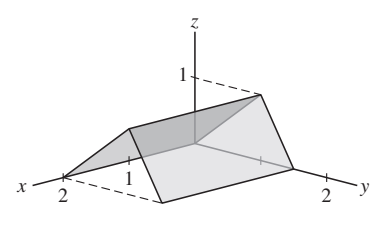
(a) The projection of \( W \) onto the \(xz\)-plane is the rectangle \( D \) given by
\[0 \leq x \leq 2, \quad 0 \leq z \leq 1.\]For each point of \( D \), the range of \( y \) values is from \( z \) to \( \frac{3-z}{2} \), so that the integral is\[I = \iiint_W f \,dV = \int_{0}^{1} \int_{0}^{2} \int_{z}^{\frac{3-z}{2}} f(x, y, z) \,dy \,dx \,dz.\](b) When \( f(x, y, z) = 1 \) we get\[\int_{0}^{1} \int_{0}^{2} \int_{z}^{(3-z)/2} 1 \,dy \,dx \,dz = \int_{0}^{1} \int_{0}^{2} y\bigg|_{z}^{(3-z)/2} \,dx \,dz\]\[= \int_{0}^{1} \int_{0}^{2} \left( \frac{3 - 3z}{2} \right) \,dx \,dz\]\[= \frac{3}{2} \int_{0}^{1} \int_{0}^{2} (1 - z) \,dx \,dz\]\[= \frac{3}{2} \int_{0}^{1} x(1 - z)\bigg|_{0}^{2} \,dz\]\[= \frac{3}{2} \int_{0}^{1} 2(1 - z) \,dz\]\[= 3\left[z-\frac12z^2\right]_0^1 = \frac{3}{2}.\](c) To determine the answer the answer geometrically, note that this prism sits over a triangular base in the \(yz\)-plane:
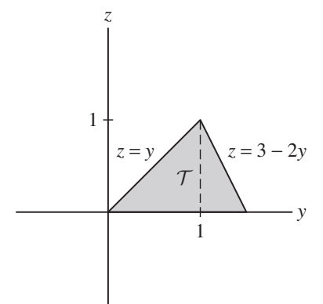
The line \( z = 3 - 2y \) intersects the \(y\)-axis at \( y = \frac{3}{2} \), so the triangle has base \( \frac{3}{2} \) and altitude \( \tau = 1 \), so its area is \( \frac{1}{2} \cdot \frac{3}{2} \cdot 1 = \frac{3}{4} \). Since the height of the prism is 2, the volume of the prism is \( \frac{3}{4} \cdot 2 = \frac{3}{2} \), which agrees with the answer in part (b).
- 17Chapter 5
Let \(D\) be the domain between \(y = x\) and \(y = \sqrt{x}\). Calculate \(\displaystyle \iint\limits_D xy \, dA\) as an iterated integral in the order \(dx \, dy\) and \(dy \, dx\).
Solution to exercise 17
In the order \( dx \, dy \): The inequalities describing \( D \) as a horizontally simple region are obtained by first rewriting the equations of the curves with \( x \) as a function of \( y \), that is, \( x = y \) and \( x = y^2 \), respectively. The points of intersection are found solving the equation
\[y = y^2 \quad \Rightarrow \quad y(1 - y) = 0 \quad \Rightarrow \quad y = 0, \, y = 1\]We obtain the following inequalities for \( D \) (see figure):\[D: 0 \leq y \leq 1, \quad y^2 \leq x \leq y\]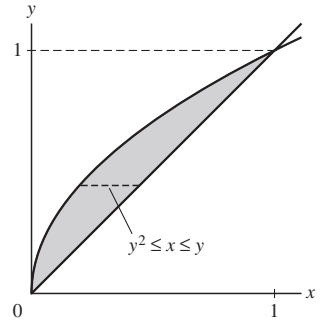
We now compute the double integral as the following iterated integral:
\[\iint_D xy \,dA = \int_{0}^{1} \int_{y^2}^{y} xy \,dx \,dy = \int_{0}^{1} \left[ \frac{x^2y}{2} \right]_{x=y^2}^{x=y} \,dy = \int_{0}^{1} \left( \frac{y \cdot y^2}{2} - \frac{y^4 \cdot y}{2} \right) \,dy\]\[= \int_{0}^{1} \left( \frac{y^3}{2} - \frac{y^5}{2} \right) \,dy = \left[ \frac{y^4}{8} - \frac{y^6}{12} \right]_{0}^{1} = \frac{1}{8} - \frac{1}{12} = \frac{1}{24}\]In the order \( dy \, dx \): \( D \) is described as a vertically simple region by the following inequalities (see figure):\[D : 0 \leq x \leq 1, \quad x \leq y \leq \sqrt{x}\]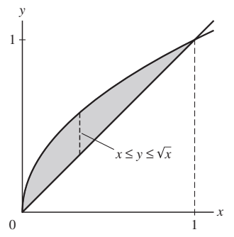
The corresponding iterated integral is
\[\iint_D xy \,dA = \int_{0}^{1} \int_{x}^{\sqrt{x}} xy \,dy \,dx = \int_{0}^{1} \left[ \frac{xy^2}{2} \right]_{y=x}^{y=\sqrt{x}} \,dx\]\[= \int_{0}^{1} \left( \frac{x \cdot x}{2} - \frac{x \cdot x^2}{2} \right) \,dx = \int_{0}^{1} \left( \frac{x^2}{2} - \frac{x^3}{2} \right) \,dx\]\[= \left[ \frac{x^3}{6} - \frac{x^4}{8} \right]_{0}^{1} = \frac{1}{6} - \frac{1}{8} = \frac{1}{24}\] - 18Chapter 5
Find the double integral of \(f(x, y) = x^3 y\) over the region between the curves \(y = x^2\) and \(y = x(1 - x)\).
Solution to exercise 18
\[ I=\int_0^{1/2}\int_{x^2}^{x(1-x)}x^3y\,dy\,dx=\int_0^{1/2}\left(\frac{x^5}{2}-x^6\right)dx. \]\[ I=\left[\frac{x^6}{12}-\frac{x^7}{7}\right]_0^{1/2}=\frac1{5376}. \] - 19Chapter 5
Change the order of integration and evaluate \(\displaystyle \int_{0}^{9} \int_{0}^{\sqrt{y}} \frac{x}{(x^2 + y)^{1/2}} \, dx \, dy\).
Solution to exercise 19
SOLUTION. The region here is described by the inequalities:
\[0 \leq x \leq \sqrt{y}, \quad 0 \leq y \leq 9\]This region can also be described by writing these inequalities:\[0 \leq x \leq 3, \quad x^2 \leq y \leq 9\]Hence, changing the order of integration and evaluating we get:\[\int_0^9 \int_0^{\sqrt{y}} \frac{x}{\sqrt{x^2 + y}} \, dx \, dy = \int_0^3 \int_{x^2}^9 \frac{x}{\sqrt{x^2 + y}} \, dy \, dx = \int_0^3 x \left( 2\sqrt{x^2 + y} \right)_{y = x^2}^{y = 9} \, dx\]\[= 2 \int_0^3 x \sqrt{x^2 + 9} - x \sqrt{x^2 + x^2} \, dx = 2 \int_0^3 x \sqrt{x^2 + 9} - x^2 \sqrt{2} \, dx\]\[= 2 \left( \frac{1}{3} (x^2 + 9)^{3/2} - \frac{\sqrt{2}}{3} x^3 \right) \bigg|_0^3\]\[= \frac{2}{3} \cdot 18^{3/2} - \frac{2 \sqrt{2}}{3} \cdot 27 - 2 \cdot \frac{1}{3} \cdot 9^{3/2}\]\[= 36\sqrt{2} - 18\sqrt{2} - 18 = 18\sqrt{2} - 18\] - 20Chapter 5
Verify directly that \(\displaystyle \int_{2}^{3} \int_{0}^{2} \frac{dy \, dx}{1 + x - y} = \int_{0}^{2} \int_{2}^{3} \frac{dx \, dy}{1 + x - y}\).
Solution to exercise 20
Integrating first with respect to y gives
\[ I_1=\int_2^3\big(\ln(x+1)-\ln(x-1)\big)dx=\left[(x+1)\ln(x+1)-(x-1)\ln(x-1)\right]_2^3=6\ln2-3\ln3. \]Integrating first with respect to x gives
\[ I_2=\int_0^2\big(\ln(4-y)-\ln(3-y)\big)dy=\left[-(4-y)\ln(4-y)+(3-y)\ln(3-y)\right]_0^2=6\ln2-3\ln3. \] - 21Chapter 5
Prove the formula \(\displaystyle \int_{0}^{1} \int_{0}^{y} f(x) \, dx \, dy = \int_{0}^{1} (1 - x) f(x) \, dx\). Then use it to calculate \(\displaystyle \int_{0}^{1} \int_{0}^{y} \frac{\sin x}{1 - x} \, dx \, dy\).
Solution to exercise 21
The region of integration of the double integral
\[\int_0^1 \int_0^y f(x) \, dx \, dy\]is described as horizontally simple by the inequalities\[0 \leq y \leq 1, \quad 0 \leq x \leq y\]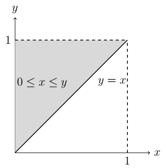
The region can also be described as a vertically simple region, by the inequalities
\[0 \leq x \leq 1, \quad x \leq y \leq 1\]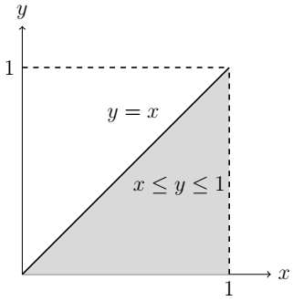
Therefore,
\[\int_0^1 \int_0^y f(x) \, dx \, dy = \int_0^1 \int_x^1 f(x) \, dy \, dx = \int_0^1 f(x) \bigg[y\bigg]_x^1 \, dx = \int_0^1 f(x)(1-x) \, dx\]We use the formula with \( f(x) = \frac{\sin x}{1-x} \). We get
\[\int_0^1 \int_0^y \frac{\sin x}{1-x} \, dx \, dy = \int_0^1 (1-x) \cdot \frac{\sin x}{1-x} \, dx = \int_0^1 \sin x \, dx = -\cos x \bigg|_0^1 = 1 - \cos 1\] - 22Chapter 5
Rewrite \(\displaystyle \int_{0}^{1} \int_{-\sqrt{1-y^2}}^{\sqrt{1-y^2}} \frac{1}{(1 + x^2 + y^2)^2} \, dx \, dy\) by interchanging the order of integration, and evaluate.
Solution to exercise 22
The region is the upper half of the unit disk. Interchanging the order gives
\[ I=\int_{-1}^1\int_0^{\sqrt{1-x^2}}\frac1{(1+x^2+y^2)^2}\,dy\,dx. \]Evaluate in polar coordinates:
\[ I=\int_0^\pi\int_0^1\frac{r}{(1+r^2)^2}\,dr\,d\theta=\pi\left[-\frac1{2(1+r^2)}\right]_0^1=\frac\pi4. \]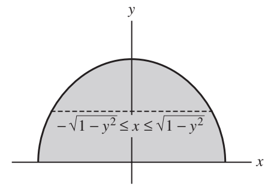
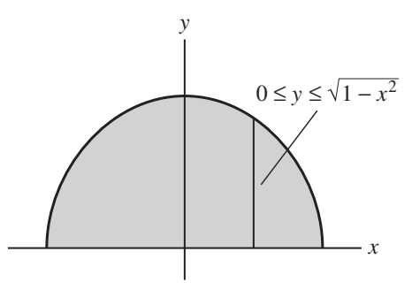
Coordinate integrals & volume
23–25- 23Chapter 5
Use cylindrical coordinates to compute the volume of the region defined by
\(4 - x^2 - y^2 \geq z \geq 10 - 4x^2 - 4y^2\).Solution to exercise 23
For the inequality as printed, \(4-r^2\ge10-4r^2\), so \(r\ge\sqrt2\). The height is \(3r^2-6\), and
\[ V=\int_0^{2\pi}\int_{\sqrt2}^{\infty}(3r^2-6)r\,dr\,d\theta=\infty. \]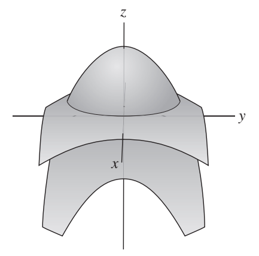
- 24Chapter 5
Evaluate \(\displaystyle \iint\limits_D x \, dA\), where \(D\) is the shaded domain in the figure below.
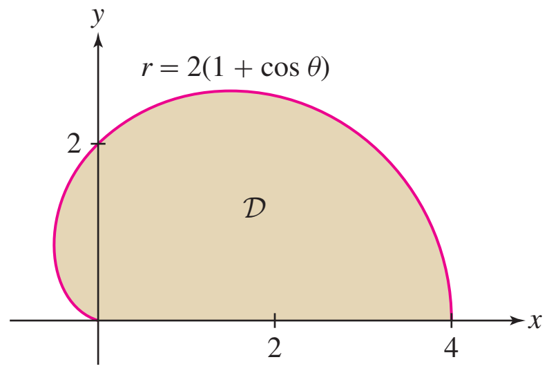
Solution to exercise 24
\[ I=\int_0^\pi\int_0^{2(1+\cos\theta)}r^2\cos\theta\,dr\,d\theta=\frac83\int_0^\pi\cos\theta(1+\cos\theta)^3d\theta. \]\[ I=\frac83\left(3\frac\pi2+\frac{3\pi}{8}\right)=5\pi. \]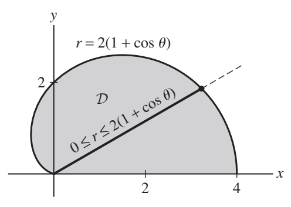
- 25Chapter 5
Find the volume of the region between the graph of the function \(f(x, y) = 1 - (x^2 + y^2)\) and the \(xy\)-plane.
Solution to exercise 25
SOLUTION.
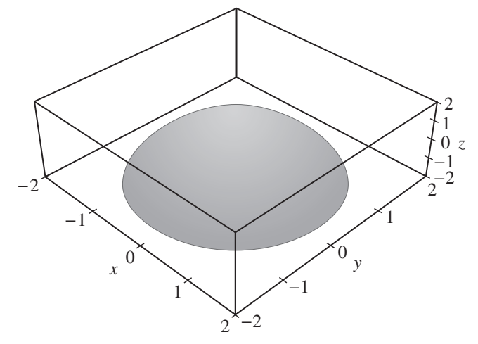
The intersection of the surface \(z = 1 - (x^2 + y^2)\) with the \(xy\)-plane is obtained by setting \(z = 0\). That is,
\[1 - (x^2 + y^2) = 0 \quad \text{or} \quad x^2 + y^2 = 1.\]Therefore, the projection of the solid onto the \(xy\)-plane is the disk \(x^2 + y^2 \leq 1\). We describe the disk as a vertically simple region:\[\mathcal{D} : -1 \leq x \leq 1, \quad -\sqrt{1-x^2} \leq y \leq \sqrt{1-x^2}.\]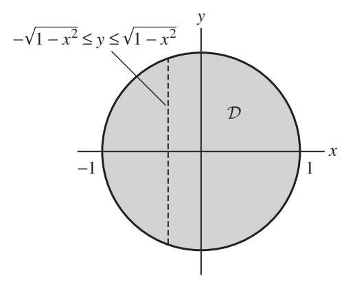
The volume \(V\) is the double integral of \(z = 1 - (x^2 + y^2)\) over \(\mathcal{D}\). That is,
\[V = \iint_{\mathcal{D}} \big(1 - (x^2 + y^2)\big) \, dA = \int_0^{2\pi} \int_0^1 \big(1 - r^2\big) r \, dr \, d\theta\]\[= 2\pi \int_0^1 \big(r - r^3\big) \, dr = \frac{\pi}{2}.\]
Triple integrals
26–31- 26Chapter 5
Evaluate \(\displaystyle \int_{0}^{3} \int_{1}^{4} \int_{2}^{4} (x^3 + y^2 + z) \, dx \, dy \, dz\).
Solution to exercise 26
SOLUTION. We evaluate the integral to obtain
\[\int_0^3 \int_1^4 \int_2^4 \big(x^3 + y^2 + z\big) \, dx \, dy \, dz = \int_0^3 \int_1^4 \left[\frac{x^4}{4} + y^2 x + zx \right]_2^4 \, dy \, dz\]\[= \int_0^3 \int_1^4 \left(60 + 2y^2 + 2z\right) \, dy \, dz\]\[= \int_0^3 \left[60y + \frac{2}{3}y^3 + 2yz \right]_1^4 \, dz\]\[= \int_0^3 \big(222 + 6z\big) \, dz\]\[= \left[222z + 3z^2 \right]_0^3 = 222(3) + 3(3^2) = 693.\] - 27Chapter 5
Calculate \(\displaystyle \iiint\limits_B (xy + z) \, dV\), where \(B = \{ 0 \leq x \leq 2, 0 \leq y \leq 1, 1 \leq z \leq 3\}\) as an iterated integral in two different ways.
Solution to exercise 27
\[ I=\int_0^2\int_0^1\int_1^3(xy+z)\,dz\,dy\,dx=\int_0^2\int_0^1(2xy+4)\,dy\,dx=\int_0^2(x+4)dx=10. \]\[ I=\int_1^3\int_0^1\int_0^2(xy+z)\,dx\,dy\,dz=\int_1^3\int_0^1(2y+2z)\,dy\,dz=\int_1^3(1+2z)dz=10. \] - 28Chapter 5
Calculate \(\displaystyle \iiint\limits_{W} xyz \, dV\), where \(W=\{0 \leq x \leq 1, x \leq y \leq 1, x \leq z \leq x+y \}\).
Solution to exercise 28
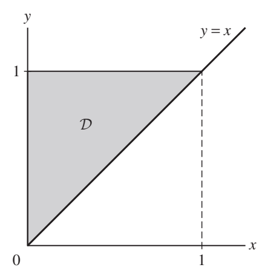
\(\mathcal{W}\) is the region between the two planes \(z = x\) and \(z = x + y\) lying over the triangle \(\mathcal{D}\), defined by \(0 \leq x \leq 1, \, x \leq y \leq 1\). Therefore, the triple integral is equal to the following iterated integral:
\[\iiint_{\mathcal{W}} xyz \, dV = \int_0^1 \int_x^1 \int_x^{x+y} xyz \, dz \, dy \, dx = \int_0^1 \int_x^1 \left[\frac{xyz^2}{2}\right]_{z=x}^{z=x+y} \, dy \, dx\]\[= \int_0^1 \int_x^1 \frac{xy}{2} \big((x+y)^2 - x^2\big) \, dy \, dx\]\[= \int_0^1 \int_x^1 \frac{xy}{2} \big(x^2 + y^2 + 2xy - x^2\big) \, dy \, dx = \int_0^1 \int_x^1 \frac{xy}{2} \big(y^2 + 2xy\big) \, dy \, dx\]\[= \int_0^1 \left[\frac{x^2y^3}{3} + \frac{xy^4}{8}\right]_x^1 \, dx = \int_0^1 \left(\frac{x^2}{3} + \frac{x}{8} - \frac{x^5}{3} - \frac{x^5}{8}\right) \, dx\]\[= \int_0^1 \left(-\frac{11x^5}{24} + \frac{x^2}{3} + \frac{x}{8}\right) \, dx\]\[= \left[-\frac{11x^6}{144} + \frac{x^3}{9} + \frac{x^2}{16}\right]_0^1 = -\frac{11}{144} + \frac{1}{9} + \frac{1}{16} = \frac{7}{72}.\] - 29Chapter 5
Evaluate \(\displaystyle I = \int_{-1}^{1} \int_{0}^{\sqrt{1-x^2}} \int_0^1 (x + y + z) \, dz \, dy \, dx\).
Solution to exercise 29
\[\begin{aligned}I &= \int_{-1}^{1} \int_{0}^{\sqrt{1-x^2}} \int_{0}^{1} (x + y + z) \, dz \, dy \, dx = \int_{-1}^{1} \int_{0}^{\sqrt{1-x^2}} \left( (x + y) z + \frac{z^2}{2} \right) \Big|_{z=0}^{z=1} \, dy \, dx \\ &= \int_{-1}^{1} \int_{0}^{\sqrt{1-x^2}} \left( x + y + \frac{1}{2} \right) \, dy \, dx = \int_{-1}^{1} \left( \left( x + \frac{1}{2} \right) y + \frac{y^2}{2} \right) \Big|_{y=0}^{y=\sqrt{1-x^2}} \, dx \\ &= \int_{-1}^{1} \left( \left( x + \frac{1}{2} \right) \sqrt{1-x^2} + \frac{1-x^2}{2} \right) \, dx = \int_{-1}^{1} x \sqrt{1-x^2} \, dx + \int_{-1}^{1} \frac{1}{2} \sqrt{1-x^2} \, dx + \int_{-1}^{1} \frac{1-x^2}{2} \, dx.\end{aligned}\]\[\begin{aligned}I &= \int_{0}^{1} \sqrt{1-x^2} \, dx + \int_{0}^{1} (1-x^2) \, dx = \left( \frac{x}{2} \sqrt{1-x^2} + \frac{1}{2} \sin^{-1} x \right) \Big|_{0}^{1} + \left( x - \frac{x^3}{3} \right) \Big|_{0}^{1} \\ &= \frac{1}{2} \sin^{-1} 1 + \frac{2}{3} = \frac{\pi}{4} + \frac{2}{3}.\end{aligned}\] - 30Chapter 5
Describe a region whose volume is equal to:
\(\displaystyle \int_{0}^{2\pi} \int_{0}^{\pi/2} \int_{4}^{9} \rho^2 \sin \phi \, d\rho \, d\phi \, d\theta\)
\(\displaystyle \int_{-2}^{1} \int_{-\pi/3}^{\pi/4} \int_{0}^{2} r \, dr \, d\theta \, dz\)
\(\displaystyle \int_{0}^{2\pi} \int_{0}^{3} \int_{-\sqrt{9-r^2}}^{0} r \, dz \, dr \, d\theta\)
Solution to exercise 30
(a) The upper spherical shell between radii 4 and 9, with \(0\le\theta\le2\pi\), \(0\le\phi\le\pi/2\).
(b) A radius-2 cylindrical sector, \(-\pi/3\le\theta\le\pi/4\), between the planes \(z=-2\) and \(z=1\).
(c) The lower half-ball of radius 3: \(0\le r\le3\), \(-\sqrt{9-r^2}\le z\le0\), \(0\le\theta\le2\pi\).
- 31Chapter 5
Find the volume of the solid contained in the cylinder \(x^2 + y^2 = 1\) below the surface \(z = (x + y)^2\) and above the surface \(z = -(x - y)^2\).
Solution to exercise 31
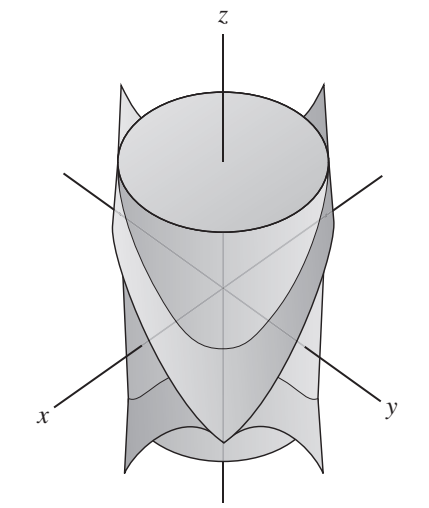
We rewrite the equations of the surfaces using cylindrical coordinates:
\[z = (x + y)^2 = x^2 + y^2 + 2xy = r^2 + 2r \cos\theta (r \sin\theta) = r^2 (1 + \sin 2\theta)\]\[z = -(x - y)^2 = -(x^2 + y^2 - 2xy) = -(r^2 - 2r^2 \cos\theta \sin\theta) = -r^2 (1 - \sin 2\theta)\]The projection of the solid onto the \( xy \)-plane is the unit disk. Therefore, the solid is described by the following inequalities:
\[W : 0 \leq \theta \leq 2\pi, \quad 0 \leq r \leq 1, \quad -r^2 (1 - \sin 2\theta) \leq z \leq r^2 (1 + \sin 2\theta)\]Expressing the volume as a triple integral and converting the triple integral to cylindrical coordinates, we get
\[V = \text{Volume}(W) = \iiint_W 1 \, dV = \int_0^{2\pi} \int_0^1 \int_{-r^2(1-\sin 2\theta)}^{r^2(1+\sin 2\theta)} 1 \, dz \, r \, dr \, d\theta\]\[= \int_0^{2\pi} \int_0^1 \left[ r z \right]_{z=-r^2(1-\sin 2\theta)}^{z=r^2(1+\sin 2\theta)} dr \, d\theta\]\[= \int_0^{2\pi} \int_0^1 r \left( r^2(1+\sin 2\theta) + r^2(1-\sin 2\theta) \right) dr \, d\theta\]\[= \int_0^{2\pi} \int_0^1 r \left( 2r^2 \right) dr \, d\theta\]\[= \int_0^{2\pi} \left( \int_0^1 2r^3 \, dr \right) d\theta\]\[= \int_0^{2\pi} \left[ \frac{r^4}{2} \right]_0^1 d\theta = \int_0^{2\pi} \frac{1}{2} d\theta\]\[= \frac{1}{2} \cdot 2\pi = \pi\]
Polar coordinates
32–34- 32Chapter 5
Use polar coordinates to evaluate \(\displaystyle \iint\limits_D x \, dA\), where \(D\) is the shaded region between the two circles of radius \(1\) in the figure below.
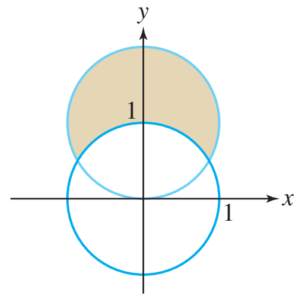
Solution to exercise 32
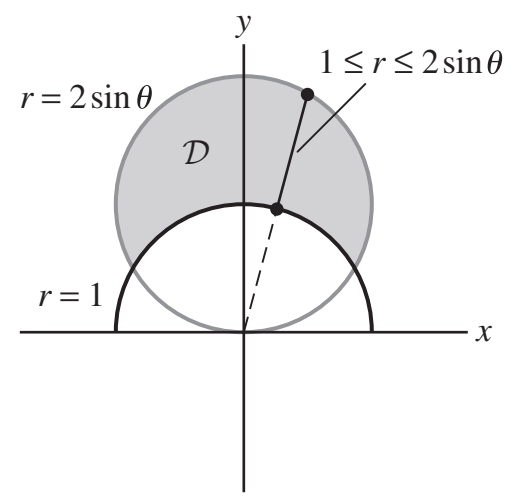
To describe \( D \) in polar coordinates, we first find the polar equations of the circles.
\( x^2 + y^2 = 1 : r = 1 \)
\( x^2 + (y - 1)^2 = 1 \):
\[1 = (r \cos \theta)^2 + (r \sin \theta - 1)^2 = r^2 \cos^2 \theta + r^2 \sin^2 \theta - 2r \sin \theta + 1\]\[= r^2 (\cos^2 \theta + \sin^2 \theta) - 2r \sin \theta + 1 = r^2 - 2r \sin \theta + 1\]or
\[r^2 - 2r \sin \theta = 0 \quad \implies \quad r^2 = 2r \sin \theta \quad \implies \quad r = 2 \sin \theta\]To find the interval for \( \theta \), we notice that the two circles intersect at the points \( \left( \frac{\sqrt{3}}{2}, \frac{1}{2} \right) \) and \( \left( -\frac{\sqrt{3}}{2}, \frac{1}{2} \right) \). Hence,
\[\theta_0 = \tan^{-1} \frac{\frac{1}{2}}{\frac{\sqrt{3}}{2}} = \tan^{-1} \frac{1}{\sqrt{3}} = \frac{\pi}{6}\]\[\theta_1 = \pi - \frac{\pi}{6} = \frac{5\pi}{6}\]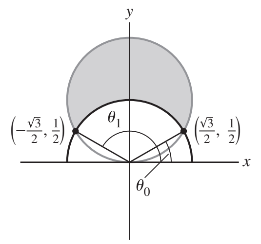
We are now able to write the polar inequalities for \( D \):
\[D : \frac{\pi}{6} \leq \theta \leq \frac{5\pi}{6}, \quad 1 \leq r \leq 2 \sin \theta\]The function is \( x = r \cos \theta \). Converting to polar coordinates, we get
\[\iint_D x \, dA = \int_{\pi/6}^{5\pi/6} \int_1^{2\sin \theta} (r \cos \theta) r \, dr \, d\theta = \int_{\pi/6}^{5\pi/6} \int_1^{2\sin \theta} r^2 \cos \theta \, dr \, d\theta\]\[= \int_{\pi/6}^{5\pi/6} \cos \theta \int_1^{2\sin \theta} r^2 \, dr \, d\theta = \int_{\pi/6}^{5\pi/6} \cos \theta \left[ \frac{r^3}{3} \right]_{r=1}^{r=2\sin \theta} d\theta\]\[= \int_{\pi/6}^{5\pi/6} \cos \theta \left( \frac{(2\sin \theta)^3}{3} - \frac{1}{3} \right) d\theta = \frac{8}{3} \int_{\pi/6}^{5\pi/6} \sin^3 \theta \cos \theta \, d\theta - \frac{1}{3} \int_{\pi/6}^{5\pi/6} \cos \theta \, d\theta\]\[= \frac{8}{3} \int_{\pi/6}^{5\pi/6} \sin^3 \theta \cos \theta \, d\theta - \frac{1}{3} \left[ \sin \theta \right]_{\theta = \pi/6}^{\theta = 5\pi/6}\]We use Integration Formulas to obtain
\[\iint_D x \, dA = \frac{8}{3} \cdot \frac{\sin^4 \theta}{4} \bigg|_{\pi/6}^{5\pi/6} = \frac{8}{12} \left( \left( \frac{1}{2} \right)^4 - \left( \frac{1}{2} \right)^4 \right) = 0\]Notice that since the region \( D \) is symmetric with respect to the \( y \)-axis, we expect the integral \( \iint_D x \, dA \) to be zero.
- 33Chapter 5
Use polar coordinates to calculate \(\displaystyle \iint\limits_D \sqrt{x^2 + y^2} \, dA\), where \(D\) is the region in the first quadrant bounded by the spiral \(r = \theta\) (use a computer to graph this), the circle \(r = 1\), and the \(x\)-axis.
Solution to exercise 33
SOLUTION. The region of integration, shown in the figure, has the following description in polar coordinates:
\[D : 0 \leq \theta \leq 1, \ \theta \leq r \leq 1\]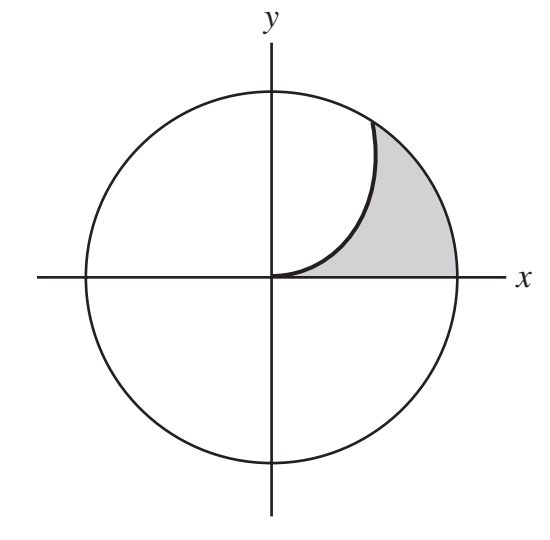
The function is \( f(x, y) = \sqrt{x^2 + y^2} = r \). We convert the double integral to polar coordinates and compute to obtain
\[\iint_D \sqrt{x^2 + y^2} \, dA = \int_0^1 \int_\theta^1 r \cdot r \, dr \, d\theta = \int_0^1 \int_\theta^1 r^2 \, dr \, d\theta = \int_0^1 \left[ \frac{r^3}{3} \right]_{r=\theta}^{r=1} \, d\theta\]\[= \int_0^1 \left( \frac{1^3}{3} - \frac{\theta^3}{3} \right) \, d\theta = \int_0^1 \left( \frac{1}{3} - \frac{\theta^3}{3} \right) \, d\theta = \frac{1}{3} \int_0^1 (1 - \theta^3) \, d\theta\]\[= \frac{1}{3} \left[ \theta - \frac{\theta^4}{4} \right]_0^1 = \frac{1}{3} \left( \frac{1}{1} - \frac{1}{4} \right) = \frac{1}{3} \cdot \frac{3}{4} = \frac{1}{4}\] - 34Chapter 5
Calculate \(\displaystyle \iint\limits_D \sin(x^2 + y^2) \, dA\), where \(\displaystyle D = \left\{ (x, y) \mid \frac{\pi}{2} \leq x^2 + y^2 \leq \pi \right\}\).
Solution to exercise 34
SOLUTION The annulus \( D \) is defined by the following inequalities in polar coordinates:
\[D : 0 \leq \theta \leq 2\pi, \quad \sqrt{\frac{\pi}{2}} \leq r \leq \sqrt{\pi}\]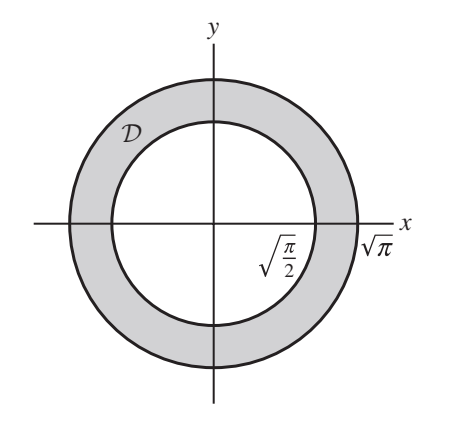
The function in polar coordinates is \( f(x, y) = \sin(x^2 + y^2) = \sin(r^2) \). We convert the double integral to polar coordinates and evaluate to obtain
\[\iint_D \sin(x^2 + y^2) \, dA = \int_0^{2\pi} \int_{\sqrt{\pi/2}}^{\sqrt{\pi}} \sin(r^2) r \, dr \, d\theta = \left( \int_0^{2\pi} d\theta \right) \left( \int_{\sqrt{\pi/2}}^{\sqrt{\pi}} \sin(r^2) r \, dr \right)\]\[= 2\pi \int_{\sqrt{\pi/2}}^{\sqrt{\pi}} \sin(r^2) r \, dr\]We evaluate the integral using the substitution \( u = r^2, \, du = 2r \, dr \):
\[\iint_D \sin(x^2 + y^2) \, dA = 2\pi \int_{\pi/2}^{\pi} \sin(u) \cdot \frac{du}{2} = \pi \int_{\pi/2}^{\pi} \sin(u) \, du\]\[= \pi \left[ -\cos(u) \right]_{\pi/2}^\pi = \pi \left( -\cos(\pi) + \cos\left(\frac{\pi}{2}\right) \right)\]\[= \pi \left( -(-1) + 0 \right) = \pi \cdot 1 = \pi\]
Cylindrical coordinates
35- 35Chapter 5
Express in cylindrical coordinates and evaluate:
\[\int_{0}^{1} \int_{0}^{\sqrt{1-x^2}} \int_{0}^{\sqrt{x^2+y^2}} z \, dz \, dy \, dx.\]Solution to exercise 35
SOLUTION We evaluate the integral by converting it to cylindrical coordinates. The projection of the region of integration onto the \( xy \)-plane, as defined by the limits of integration, is
\[D : 0 \leq x \leq 1, \ 0 \leq y \leq \sqrt{1 - x^2}\]That is, \( D \) is the part of the disk \( x^2 + y^2 \leq 1 \) in the first quadrant. The inequalities defining \( D \) in polar coordinates are
\[D : 0 \leq \theta \leq \frac{\pi}{2}, \ 0 \leq r \leq 1\]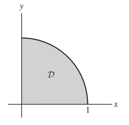
The upper surface is \( z = \sqrt{x^2 + y^2} = r \) and the lower surface is \( z = 0 \). Therefore, the inequalities defining the region of integration in cylindrical coordinates are
\[W : 0 \leq \theta \leq \frac{\pi}{2}, \ 0 \leq r \leq 1, \ 0 \leq z \leq r\]Converting the double integral to cylindrical coordinates gives
\[I = \int_0^{\pi/2} \int_0^1 \int_0^r z \, dz \, r \, dr \, d\theta = \int_0^{\pi/2} \int_0^1 \left[ \frac{z^2 r}{2} \right]_{z=0}^r dr \, d\theta = \int_0^{\pi/2} \int_0^1 \frac{r^3}{2} \, dr \, d\theta\]\[= \left( \int_0^{\pi/2} d\theta \right) \left( \int_0^1 \frac{r^3}{2} \, dr \right) = \frac{\pi}{2} \left[ \frac{r^4}{8} \right]_0^1 = \frac{\pi}{2} \cdot \frac{1}{8} = \frac{\pi}{16}\]
Spherical coordinates
36–37- 36Chapter 5
Use spherical coordinates to calculate the triple integral of \( f(x, y, z) = x^2 + y^2 + z^2 \) over the region
\[1 \leq x^2 + y^2 + z^2 \leq 4.\]Solution to exercise 36
SOLUTION The region of integration is the region enclosed by the spheres \( x^2 + y^2 + z^2 = 1 \) or \( \rho = 1 \), and \( x^2 + y^2 + z^2 = 4 \) or \( \rho = 2 \). In this region, \( \theta \) is changing between \( 0 \) and \( 2\pi \), and \( \phi \) is changing between \( 0 \) and \( \pi \). Therefore, \( W \) is described by the following inequalities:
\[W : 0 \leq \theta \leq 2\pi, \quad 0 \leq \phi \leq \pi, \quad 1 \leq \rho \leq 2\]The function is \( f(x, y, z) = x^2 + y^2 + z^2 = \rho^2 \). Using triple integrals in spherical coordinates we get
\[\iiint_W (x^2 + y^2 + z^2) \, dV = \int_0^{2\pi} \int_0^{\pi} \int_1^2 \rho^2 \cdot \rho^2 \sin\phi \, d\rho \, d\phi \, d\theta = \int_0^{2\pi} \int_0^{\pi} \int_1^2 \rho^4 \sin\phi \, d\rho \, d\phi \, d\theta\]\[= \left( \int_0^{2\pi} d\theta \right) \left( \int_0^{\pi} \sin\phi \, d\phi \right) \left( \int_1^2 \rho^4 \, d\rho \right) = 2\pi \cdot \left( -\cos\phi \bigg|_0^{\pi} \right) \cdot \left( \frac{\rho^5}{5} \bigg|_1^2 \right)\]\[= 2\pi \cdot 2 \cdot \left( \frac{2^5 - 1^5}{5} \right) = \frac{124\pi}{5}\] - 37Chapter 5
Convert to spherical coordinates and evaluate:
\[\int_{-2}^{2} \int_{-\sqrt{4-x^2}}^{\sqrt{4-x^2}} \int_{0}^{\sqrt{4-x^2-y^2}} e^{-(x^2+y^2+z^2)^{3/2}} \, dz \, dy \, dx.\]Solution to exercise 37
SOLUTION The region of integration as defined by the limits of integration is
\[W : -2 \leq x \leq 2, \ -\sqrt{4 - x^2} \leq y \leq \sqrt{4 - x^2}, \ 0 \leq z \leq \sqrt{4 - x^2 - y^2}\]That is, \( W \) is the region enclosed by the sphere \( x^2 + y^2 + z^2 = 4 \) and the \( xy \)-plane. We see that the region of integration is the upper half-ball \( x^2 + y^2 + z^2 \leq 4 \), hence the inequalities defining \( W \) in spherical coordinates are
\[W : 0 \leq \theta \leq 2\pi, \ 0 \leq \phi \leq \frac{\pi}{2}, \ 0 \leq \rho \leq 2\]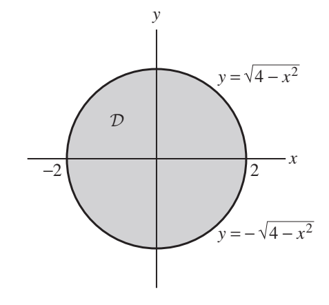
The function is \( f(x, y, z) = e^{-(x^2 + y^2 + z^2)^{3/2}} = e^{-(\rho^2)^{3/2}} = e^{-\rho^3} \), therefore the integral in spherical coordinates is
\[I = \int_0^{2\pi} \int_0^{\pi/2} \int_0^2 e^{-\rho^3} \rho^2 \sin\phi \, d\rho \, d\phi \, d\theta = \left( \int_0^{2\pi} d\theta \right) \left( \int_0^{\pi/2} \sin\phi \, d\phi \right) \left( \int_0^2 e^{-\rho^3} \rho^2 \, d\rho \right)\]\[= 2\pi \left( -\cos\phi \big|_0^{\pi/2} \right) \int_0^2 e^{-\rho^3} \rho^2 \, d\rho = 2\pi \int_0^2 e^{-\rho^3} \rho^2 \, d\rho\]We compute the integral using the substitution \( u = \rho^3, \ du = 3\rho^2 \, d\rho \). We get
\[I = 2\pi \int_0^8 e^{-u} \frac{du}{3} = \frac{2\pi}{3} \int_0^8 e^{-u} \, du = \frac{2\pi}{3} \left[ -e^{-u} \right]_0^8\]\[= \frac{2\pi}{3} \left( -e^{-8} + 1 \right) = \frac{2\pi (-1 + e^8)}{3e^8}\]
Averages & mass
38–43- 38Chapter 5
Find the average value of \( f(x, y, z) = x y^2 z^3 \) on the box \( [0, 1] \times [0, 2] \times [0, 3] \).
Solution to exercise 38
SOLUTION. The volume of the box is \( V = 1 \cdot 2 \cdot 3 = 6 \), hence the average value of \( f(x, y, z) = xy^2z^3 \) on the box \( B \) is
\[\bar{f} = \frac{1}{V} \iiint_B f(x, y, z) \, dV = \frac{1}{6} \int_0^1 \int_0^2 \int_0^3 xy^2z^3 \, dz \, dy \, dx = \frac{1}{6} \left( \int_0^1 x \, dx \right) \left( \int_0^2 y^2 \, dy \right) \left( \int_0^3 z^3 \, dz \right)\]\[= \frac{1}{6} \left( \left[ \frac{x^2}{2} \right]_0^1 \right) \left( \left[ \frac{y^3}{3} \right]_0^2 \right) \left( \left[ \frac{z^4}{4} \right]_0^3 \right) = \frac{1}{6} \cdot \frac{1^2}{2} \cdot \frac{2^3}{3} \cdot \frac{3^4}{4}\]\[= \frac{1}{6} \cdot \frac{1}{2} \cdot \frac{8}{3} \cdot \frac{81}{4} = \frac{1 \cdot 8 \cdot 81}{6 \cdot 2 \cdot 3 \cdot 4} = 4.5\] - 39Chapter 5
Let \( W \) be the ball (solid sphere) of radius \( R \) in \( \mathbb{R}^3 \) centered at the origin, and let \( P(0,0,R) \) be the North Pole. Let \( d_p(x, y, z) \) be the distance from \( P \) to \( (x, y, z) \). Show that the average value of \( d_p \) over the sphere \( W \) is equal to \( \overline{d} = 6R/5 \). Hint: Show that
\[\overline{d} = \frac{1}{\frac{4}{3} \pi R^3} \int_{0}^{2\pi} \int_{0}^{R} \int_{0}^{\pi} \rho^2 \sin \phi \sqrt{R^2 + \rho^2 - 2\rho R \cos \phi} \, d\phi \, d\rho \, d\theta\]and evaluate.Solution to exercise 39
For \(0<\rho\le R\), put \(u=R^2+\rho^2-2R\rho\cos\phi\). Then
\[ \int_0^\pi\sin\phi\sqrt{R^2+\rho^2-2R\rho\cos\phi}\,d\phi=\frac{(R+\rho)^3-(R-\rho)^3}{3R\rho}=2R+\frac{2\rho^2}{3R}. \]\[ \iiint_W d_P\,dV=2\pi\int_0^R\rho^2\left(2R+\frac{2\rho^2}{3R}\right)d\rho=\frac{8\pi R^4}{5}. \]\[ \overline d=\frac{8\pi R^4/5}{4\pi R^3/3}=\frac{6R}{5}. \] - 41Chapter 5
Use cylindrical coordinates to find the mass of the solid bounded by \(z=8-x^2-y^2\) and \(z=x^2+y^2\), with mass density \(\rho(x,y,z)=\sqrt{x^2+y^2}\).
Solution to exercise 41
\[ M=\int_0^{2\pi}\int_0^2\int_{r^2}^{8-r^2}r^2\,dz\,dr\,d\theta=2\pi\int_0^2(8r^2-2r^4)dr=\frac{256\pi}{15}. \]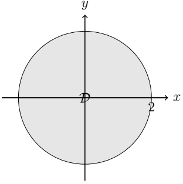
- 42Chapter 5
Let \( W \) be the portion of the half-cylinder \( x^2 + y^2 \leq 4 \), \( x \geq 0 \) such that \( 0 \leq z \leq 3y \). Use cylindrical coordinates to compute the mass of \( W \) if the mass density is \( \rho(x, y, z) = z^2 \).
Solution to exercise 42
SOLUTION.
Since \( 0 \leq z \leq 3y \), we have \( y \geq 0 \). Also \( x \geq 0 \), hence \( W \) projects onto the quarter circle \( D \) in the \( xy \)-plane of radius 2, where \( x \geq 0 \) and \( y \geq 0 \). In polar coordinates,\[D : 0 \leq \theta \leq \frac{\pi}{2}, \ 0 \leq r \leq 2\]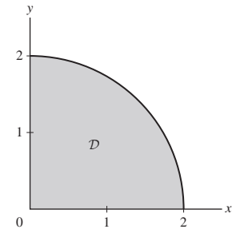
The upper boundary of \( W \) is the plane \( z = 3y = 3r \sin \theta \) and the lower boundary is \( z = 0 \). Hence,
\[W : 0 \leq \theta \leq \frac{\pi}{2}, \ 0 \leq r \leq 2, \ 0 \leq z \leq 3r \sin \theta\]Using cylindrical coordinates, the total mass is the following integral:
\[M = \iiint_W z^2 \, dv = \int_0^{\pi/2} \int_0^2 \int_0^{3r \sin \theta} z^2 r \, dz \, dr \, d\theta = \int_0^{\pi/2} \int_0^2 \left[ \frac{z^3 r}{3} \right]_{z=0}^{z=3r \sin \theta} dr \, d\theta\]\[= \int_0^{\pi/2} \int_0^2 r \left( \frac{(3r \sin \theta)^3}{3} \right) dr \, d\theta = \int_0^{\pi/2} \int_0^2 \frac{r (3r \sin \theta)^3}{3} \, dr \, d\theta\]\[= \int_0^{\pi/2} \int_0^2 \frac{r \cdot 27r^3 \sin^3 \theta}{3} \, dr \, d\theta = \int_0^{\pi/2} \int_0^2 9r^4 \sin^3 \theta \, dr \, d\theta\]\[= \left( \int_0^{\pi/2} \sin^3 \theta \, d\theta \right) \left( \int_0^2 9r^4 \, dr \right) = \left( \int_0^{\pi/2} \sin^3 \theta \, d\theta \right) \left[ \frac{9r^5}{5} \right]_0^2\]\[= \left( \int_0^{\pi/2} \sin^3 \theta \, d\theta \right) \cdot \frac{9 \cdot 2^5}{5} = \frac{288}{5} \int_0^{\pi/2} \sin^3 \theta \, d\theta\]We compute the integral using an integration table to obtain
\[M = \frac{288}{5} \left( -\frac{\sin^2 \theta \cos \theta}{3} - \frac{2}{3} \cos \theta \right) \Big|_{\theta=0}^{\theta=\pi/2}\]\[= \frac{288}{5} \left( 0 - \left( -\frac{2}{3} \right) \right) = \frac{288}{5} \cdot \frac{2}{3} = 38.4\] - 43Chapter 5
Use cylindrical coordinates to find the mass of a cylinder of radius \(4\) and height \(10\) if the mass density at a point is equal to the square of the distance from the cylinder’s central axis.
Solution to exercise 43
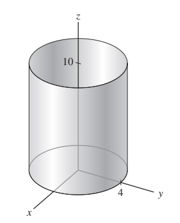
The mass density is \( \rho(x, y, z) = x^2 + y^2 = r^2 \), hence the mass of the cylinder is
\[M = \iiint_W (x^2 + y^2) \, dV\]The region \( W \) is described using cylindrical coordinates by the following inequalities:
\[W : 0 \leq \theta \leq 2\pi, \ 0 \leq r \leq 4, \ 0 \leq z \leq 10\]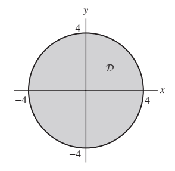
Thus,
\[M = \iiint_W (x^2 + y^2) \, dV = \int_0^{2\pi} \int_0^4 \int_0^{10} r^2 \cdot r \, dz \, dr \, d\theta = \int_0^{2\pi} \int_0^4 \int_0^{10} r^3 \, dz \, dr \, d\theta\]\[= \int_0^{2\pi} \int_0^4 r^3 \left[ z \right]_0^{10} \, dr \, d\theta = \int_0^{2\pi} \int_0^4 r^3 \cdot 10 \, dr \, d\theta = \int_0^{2\pi} \int_0^4 10r^3 \, dr \, d\theta\]\[= \int_0^{2\pi} \left[ \frac{10r^4}{4} \right]_0^4 \, d\theta = \int_0^{2\pi} \left( 640 \right) \, d\theta = 640 \int_0^{2\pi} d\theta = 640 \cdot 2\pi = 1280\pi\]
Transformations & Jacobians
44–47- 44Chapter 5
Find a linear mapping \( T(u, v) \) that maps the unit square to the parallelogram in the xy-plane spanned by the vectors \( \langle 3, -1 \rangle \) and \( \langle 1, 4 \rangle \). Then use the Jacobian to find the area of the image of the rectangle \( R = [0, 4] \times[0, 3] \) under \( T \).
Solution to exercise 44
\[ T(u,v)=(3u+v,-u+4v),\qquad\det DT=\begin{vmatrix}3&1\\-1&4\end{vmatrix}=13. \]\[ \operatorname{Area}(T([0,4]\times[0,3]))=13\cdot4\cdot3=156. \]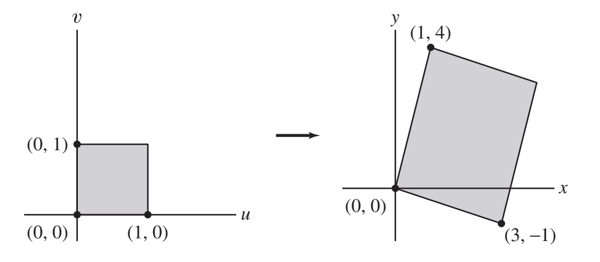
- 45Chapter 5
Use the map
\[G(u, v) = \left( \frac{u + v}{2}, \frac{u - v}{2} \right)\]to compute\[\iint\limits_R ((x - y) \sin(x + y))^2 \, dx \, dy,\]where \( R \) is the square with vertices \( (\pi, 0) \), \( (2\pi, \pi) \), \( (\pi, 2\pi) \), and \( (0, \pi) \).Solution to exercise 45
\[ u=x+y,\quad v=x-y,\qquad|\det DG|=\left|\begin{vmatrix}1/2&1/2\\1/2&-1/2\end{vmatrix}\right|=\frac12. \]The vertices map to \((\pi,\pi),(3\pi,\pi),(3\pi,-\pi),(\pi,-\pi)\). Thus
\[ I=\frac12\int_\pi^{3\pi}\int_{-\pi}^\pi v^2\sin^2u\,dv\,du=\frac12\cdot\pi\cdot\frac{2\pi^3}{3}=\frac{\pi^4}{3}. \]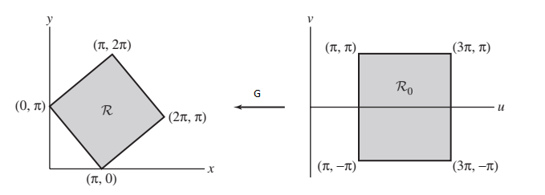
- 46Chapter 5
Let \( D \) be the shaded region in the figure below, and let \( F \) be the map
\[u = y + x^2, \quad v = y - x^3\]Show that \( F \) maps \( D \) to a rectangle \( R \) in the \( uv \)-plane.
Apply the formula \(\text{Area}(F(D)) \approx \abs{\text{Jac}(F)(P)} \text{Area}(D)\) with \( P = (1, 7) \) to estimate Area(\( D \)).
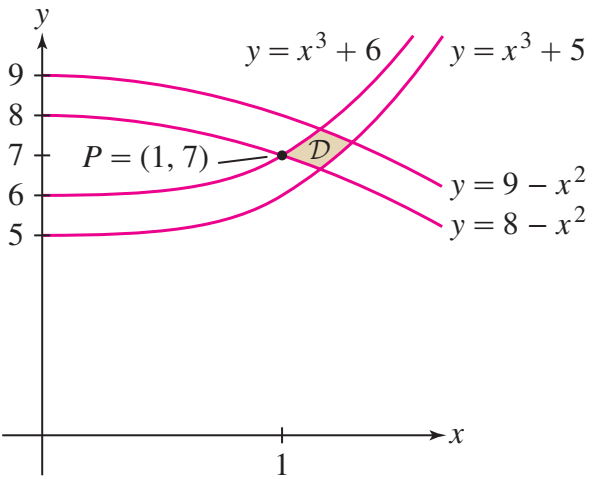
Solution to exercise 46
The four boundaries \(y=x^3+5,y=x^3+6,y=8-x^2,y=9-x^2\) map to \(v=5,6\) and \(u=8,9\), giving \(R=[8,9]\times[5,6]\).
\[ \det DF=\begin{vmatrix}2x&1\\-3x^2&1\end{vmatrix}=2x+3x^2,\qquad\det DF(1,7)=5. \]\[ \operatorname{Area}(D)\approx\frac{\operatorname{Area}(R)}{|\det DF(1,7)|}=\frac15. \] - 47Chapter 5
Calculate the integral of \(\displaystyle f(x,y) = e^{3x-2y}\) over the parallelogram in the figure below.
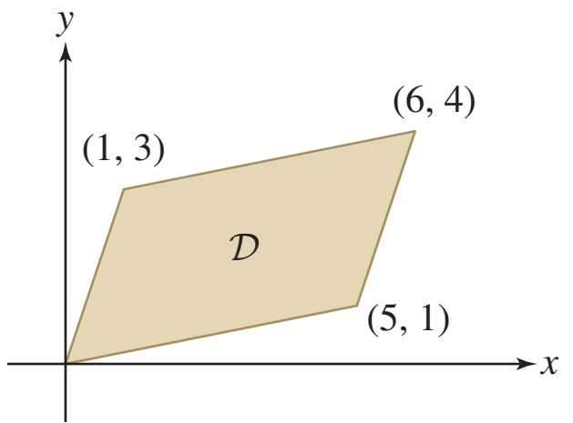
Solution to exercise 47
The boundary lines are \(x-5y=0,-14\) and \(3x-y=0,14\). Set \(u=x-5y\), \(v=3x-y\), so \(-14\le u\le0\), \(0\le v\le14\).
\[ x=\frac{-u+5v}{14},\qquad y=\frac{-3u+v}{14},\qquad |\det DT|=\left|\begin{vmatrix}-1/14&5/14\\-3/14&1/14\end{vmatrix}\right|=\frac1{14}. \]\[ 3x-2y=\frac{3u+13v}{14},\qquad I=\frac1{14}\int_{-14}^0e^{3u/14}du\int_0^{14}e^{13v/14}dv=\frac{14}{39}(1-e^{-3})(e^{13}-1). \]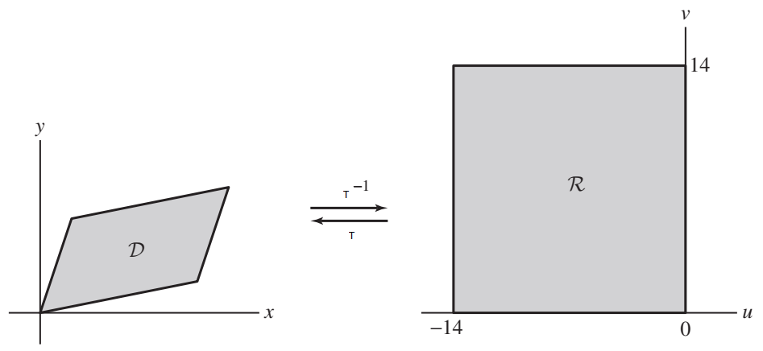